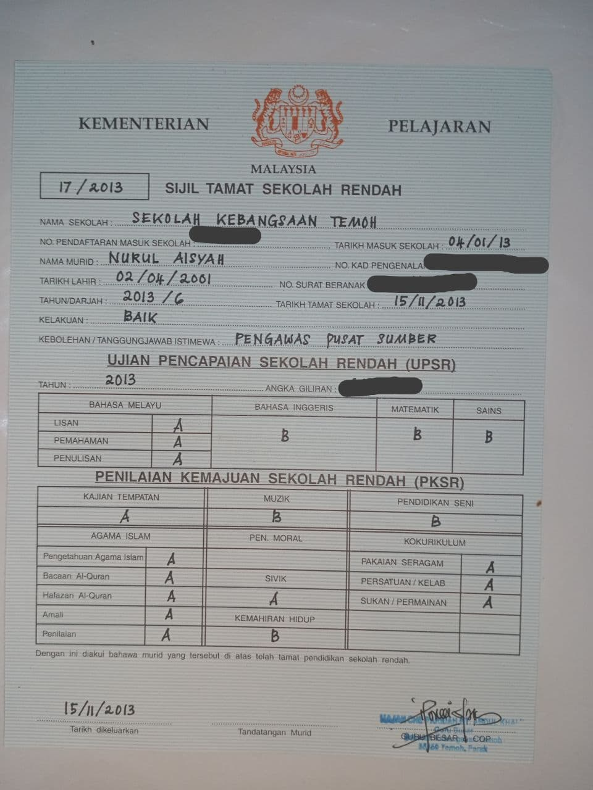
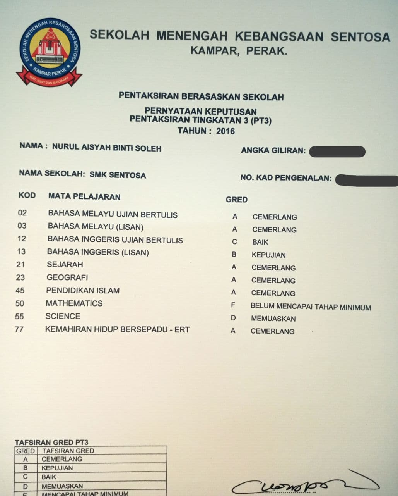
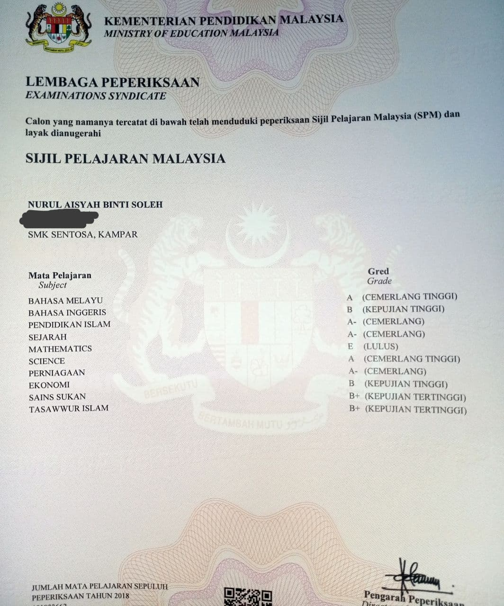

Home
About Myself
My Experience
My Education
My Family
My Gallery
My Pets
My Business
My Education
I went to "Tadika Anakku Bijak" when I was 5 years old, year 2006.
At that time, my family and I just moved from Kuala Lumpur to a small town called Kampar, perak.
When I 7 years old, I went to a primary school named, "Sekolah Kebangsaan Chenderiang".
I moved to another primary school when I was 10 years old. The school I went named, "Sekolah Kebangsaan Temoh".
I got 2A and 3B for my UPSR in 2013.
Moved on to my secondary school. I went to "Sekolah Menengah Kebangsaan Sentosa, Kampar".
I got 6A for my PT3 in 2016.
Then, in 2018, I got 5A for my SPM.
Currently, I continuing my studies at UiTM Kedah for my Diploma.

My UPSR Result in 2013

My PT3 Result in 2016

My SPM Result in 2018